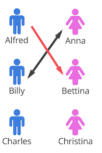
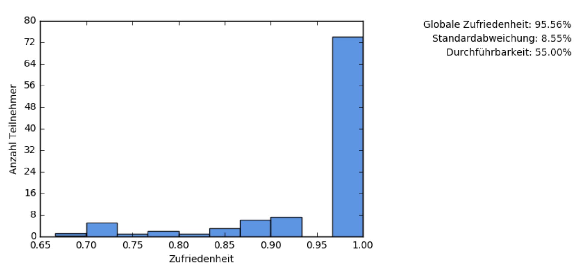

Ein Nobelpreis, stabile Ehen und die Zuteilung von Kindern auf Ferienpassangebote
Alle Eltern von Kindern, die an einem Ferienpass teilnehmen, kennen das Problem. In jedem einzelnen Angebote gibt es nur eine beschränkte Anzahl Plätze. Das eigene Kind macht es extrem unglücklich, wenn es nicht an seinen favorisierten Angeboten teilnehmen kann. Der Kurs bei der Feuerwehr oder auf dem Ponyhof ist immer viel zu schnell ausgebucht.
Auf der anderen Seite stehen die Organisatoren eines lokalen Ferienpassangebotes, die ehrlich darum bemüht sind, die Zuteilung der Kinder auf die Kurse möglichst fair vorzunehmen. Dabei sind auch sie mit den Restriktion der beschränkten Anzahl Plätze konfrontiert. Erschwerend kommt für die Organisatoren hinzu, dass sie neben der Maximalanzahl Kinder in einem Kurs auch eine Minimalanzahl pro Kurs zu erfüllen haben, damit ein Angebot überhaupt durchgeführt werden kann.
Keine einfache Ausgangslage also für Kinder, Eltern und Organisatoren.
Stable Marriages
Auf der neuen Ferienpass-Plattform wird die Zuteilung von Teilnehmern zu Angeboten mit einer modifizierten Version des Gale und Shapely Stable-Marriage-Algorithmus umgesetzt.
Um die neue Zuteilung zu verstehen ist es nützlich, das Grundprinzip dahinter zu kennen. Der Mechanismus löst nämlich ein anderes Problem als die Zuteilung bei Ferienpässen. Das gelöste Problem nennt sich “Stable Marriages Problem”, auf Deutsch das Problem der «Stabilen Ehen».
Stellen wir uns vor, wir haben eine Gruppe unverheirateter Männer und eine gleich grosse Gruppe unverheirateter Frauen:

Wir möchten nun jeden Mann mit einer Frau verheiraten, so dass am Schluss keine Singles übrig bleiben. Dass dies etwas archaisch ist, ignorieren wir hier einfach - das Stable Marriages Problem wurde schliesslich in den 60ern formuliert.
Dabei möchten wir, dass die so entstandenen Ehen alle stabil sind. Was bedeutet das? Wir betrachten eine Ehe als stabil, wenn kein Mann eine andere Frau finden kann, welche lieber mit ihm als mit ihrem Ehemann zusammen wäre. Wenn sich solch ein Paar finden würde, dann wären die Ehen nämlich instabil, denn es würde ein Nährboden zur Untreue geschaffen.

Darum prüfe Alternativen, wer sich ewig bindet
Das Problem der Stable Marriages löst der Gale und Shapely Algorithmus, indem er alle Männer auffordert alle Frauen nach Präferenz zu ordnen. Alfred möchte beispielsweise am liebsten Anna heiraten. Möchte Anna dies nicht, so möchte er Bettina und wenn nicht Bettina, dann Christina heiraten:

Mit einer solchen Liste ausgestattet, fragt Alfred zuerst Anna. Anna sagt dabei entweder “vielleicht” oder “nein”. Ist Alfred der Erste, der Anna fragt, so sagt sie “vielleicht”, denn es könnte ja sein, dass ihr kein weiterer Mann je wieder einen Heiratsantrag stellt.
Wenn jetzt Billy ebenfalls am liebsten Anna heiraten möchte, so fragt er Anna, nachdem Alfred bereits gefragt hat - und hier wird es interessant. Nun ist Anna nämlich bereits verlobt, sie kann aber nach ihrer eigenen Präferenz nun beurteilen, ob sie lieber Alfred oder Billy heiraten würde. Bleibt sie bei Alfred, so sagt sie nein zu Billy. Wechselt sie zu Billy, so sagt sie Alfred ab. Nehmen wir an, Anna mag Billy lieber, dann ist Alfred nun wieder Single und fragt als nächstes seine zweite Wahl, nämlich Bettina:

Die Männer fragen also alle Frauen in der Reihenfolge ihrer Präferenz und die Frauen akzeptieren zuerst den ersten Antrag und entscheiden sich dann jeweils anders, wenn sich jemand besseres findet.
Das Resultat, bei dem alle verheiratet sind, ist eine Gruppe von Ehen welche stabil sind. Denn alle Männer haben die beste Frau gefunden, welche bereit ist Ja zu sagen. Und alle Frauen haben den jeweils besten Mann behalten.
Weitere Anwendungen des Algorithmus
Nun ist das so beschriebene Beispiel abstrakt und mathematisch - im realen Leben heiratet man nicht einfach auf biegen und brechen - aber es löst eine generelle Klasse von Problemen. Nämlich das Problem wenn zwei Gruppen miteinander stabil verknüpft werden sollen.
Das könnten zum Beispiel Studenten sein, die sich für eine Vorlesung anmelden. Die Studenten wählen die Vorlesungen aus, die sie am liebsten besuchen würden, und die Professoren wählen die Studenten aus, welche sie am liebsten in der Klasse hätten. Das Resultat ist stabil, da kein Student eine bessere Klasse finden kann welche ihn aufnehmen würde.

Bild: NOBEL 2012 Economics: Stable allocations and market design: http://www.nature.com/nature/journal/v492/n7427/fig_tab/492054a_F1.html
Ein anderes Beispiel ist die Zuweisung von Medizinstudenten auf Kliniken. Oder die Zuweisung von Kindern zu Kinderkrippen. Oder die Zuweisung von Teilnehmern zu Durchführungen in einem Ferienpass.
Die Zuweisung auf der Ferienpass-Plattform
Im Feriennet werden Teilnehmer zu Angeboten zugeteilt. Teilnehmer haben dabei eine Wunschliste, von der sie bis zu drei Einträge als Favoriten markieren können. Die Angebote oder Durchführungen auf der anderen Seite haben implizit ebenfalls eine Wunschliste.
Genau wie die Frauen - im Beispiel der Hochzeit - sagen Durchführungen “vielleicht” zu jedem Teilnehmer, bis die Durchführung voll ist und ab diesem Zeitpunkt wechseln die Durchführungen bisherige gegen bessere Teilnehmer aus.
Der bessere Teilnehmer
Was macht einen besseren Teilnehmer aus? Ein besserer Teilnehmer ist zum Beispiel einer, der besonders gerne an der Durchführung teilnehmen möchte. Also jemand, der das entsprechende Angebot favorisiert. Motivierte Teilnehmer sind besser als unmotivierte Teilnehmer.
Auch möchte eine Durchführung lieber einen Teilnehmer in der richtigen Altersklasse haben. Wenn sich nicht genug Teilnehmer melden, so kann die Durchführung mit Teilnehmern leben, die eigentlich etwas zu alt sind. Wenn aber die Durchführung besonders beliebt ist, so werden Teilnehmer bevorzugt, welche im richtigen Alter sind.
Diese Kriterien lassen sich beliebig erweitern. Vielleicht möchte eine Durchführung am liebsten Kinder von Eltern, welche ebenfalls eine Veranstaltung anbieten? Oder Teilnehmer, die in der Nähe wohnen?
Im Moment werden Kinder bevorzugt, welche besonders gerne an den Kurs möchten. Das erleichtert die Nachvollziehbarkeit in der Testphase. In der Zukunft sind aber weitere und komplexere Modelle möglich. Der Algorithmus ist hier recht flexibel.
Stabile Resultate
Nach der Zuweisung erreichen wir - genau wie beim Heiratsproblem - eine stabile Zuweisung. Will heissen, ein Teilnehmer, der einem Kurs zugewiesen wurde, nicht lieber in einem anderen Kurs wäre, welcher noch frei ist. Wäre dem so, so würden sich die Teilnehmer nach der automatischen Zuweisung vermehrt anders entscheiden und sich von den zugewiesenen Kursen abmelden.
Das lässt sich zwar nie ganz verhindern, aber mit einer stabilen Zuweisung ist die Wahrscheinlichkeit von solchen Änderungen geringer.
Der gierige Algorithmus
Bevor wir auf den aktuellen Algorithmus gekommen sind, haben wir es mit einem sog. “gierigen Algorithmus” versucht. Ein gieriger Algorithmus kümmert sich nicht um das Gesamtwohl und holt in jedem Schritt das Maximum heraus. In unserem Fall versucht jede Durchführung so viele Teilnehmer zu finden wie nötig.
Das Resultat ist eine Maximierung der durchführbaren Kurse. Zumindest für den Moment. Als Konsequenz werden dabei nämlich viele Teilnehmer unzufrieden, denn wir weisen sie nicht jenen Kursen zu, die sie am liebsten möchten. Beziehungsweise, die Teilnehmer haben nach der automatischen Zuweisung durch den gierigen Algorithmus gute Gründe, sich anders zu entscheiden. Denn es gibt in diesem Fall durchaus Durchführungen, die sie lieber hätten, und diese haben durchaus noch freie Plätze. In der Folge kommt es zu Stornierungen, was weiter dazu führt, dass bestimmte Durchführungen doch wieder abgesagt werden müssen. Dies führt direkt ins Chaos.
Zufriedenheit der Teilnehmer
Stabilität ist sicher ein wichtiges Merkmal einer Zuweisung, aber die resultierende Zufriedenheit ist nicht zu vernachlässigen. Je zufriedener die Teilnehmer, desto erfolgreicher der Ferienpass in der Zukunft. Nun ist die Zufriedenheit eine kaum messbare und abstrakte Grösse. Vereinfacht lässt sich aber folgende Annahme treffen:
- Ein Teilnehmer ist 100% zufrieden, wenn alle Wünsche angenommen wurden.
- Ein Teilnehmer ist 0% zufrieden, wenn keine Wünsche angenommen wurden.
- Ein Teilnehmer mit zwei Wünschen ist 66% zufrieden, wenn die 1. Priorität angenommen und die 2. Priorität abgelehnt wurde.
- Ein Teilnehmer mit zwei Wünschen ist 33% zufrieden wenn die 1. Priorität abgelehnt und die 2. Priorität angenommen wurde.
Daraus lässt sich eine relativ kompakte Formel aufstellen, welche die Zufriedenheit von 0-100% errechnet:
(2 x P1a + P2a) / (2 x P1 + P2)
P1a Anzahl Angenommene Wünsche der Priorität 1
P2a Anzahl Angenommene Wünsche der Priorität 2
P1 Anzahl Wünsche der Priorität 1
P2 Anzahl Wünsche der Priorität 2
Im Prinzip teilen wir schlicht die angenommenen Wünsche mit der Gesamtzahl Wünsche, wobei wir Favoriten stärker Gewichten.
Das Experiment
Der Test, ob unser Algorithmus wirklich besser ist als der gierige Ansatz, soll in einem Experiment erbracht werden. Dazu wurden verschiedene Anmeldedaten zufällig generiert, wobei wir versucht haben, uns möglichst an die Kenndaten der existierenden Datenbank zu halten. Wir haben beispielsweise analysiert, in welchem Verhältnis das Angebot zu der Nachfrage steht, wieviele Wünsche ein durchschnittlicher Teilnehmer hat und so weiter. Unabhängig davon haben wir auch Extreme ausprobiert, wie z.B. ein Ferienpass mit 5 Angeboten und 500 Teilnehmern.
Resultat des gierigen Algorithmus
Die Resultate sprechen für sich. Bei 100 Angeboten und 100 Teilnehmern mit jeweils rund 5 Einträgen auf der Wunschliste ist dies das Resultat des gierigen Algorithmus:

Auf der rechten Seite des Diagramms sehen wir, dass 20 Teilnehmer 90-100% zufrieden sind. 11 Teilnehmer sind 80-90% Zufrieden, 9 Teilnehmer sind 70-80% zufrieden und so weiter. Auf der linken Seite sehen wir das 12 Teilnehmer nur 0-10% zufrieden sind.
Oben rechts ist ersichtlich, dass die globale Zufriedenheit sich auf 61.88% beläuft und 56% der Durchführungen genug Teilnehmer haben. Die Standardabweichung gibt an, was sich anhand der Balken zeigt: die Zufriedenheit ist pro Teilnehmer sehr unterschiedlich.
Zur Erinnerung: Dieser Ansatz maximiert die Durchführbarkeit, ohne Rücksicht auf die Zufriedenheit.
Resultat abgewandelten Stable-Marriage-Algorithmus
Das Resultat des gewählten Algorithmus, der auf dem Stable-Marriage-Algorithmus von Gale und Shapely basiert, ist wesentlich besser:

Fast alle Teilnehmer sind sehr zufrieden und wir haben nur eine leicht tiefere Durchführbarkeit. Ein klarer Gewinner.
Das Resultat überrascht vielleicht etwas (und deutet darauf hin, dass es zwischen dem gierigen und dem gewählten Algorithmus noch andere Optionen gibt). Aber es bestätigt, was sich bei unseren Experimenten doch immer wieder gezeigt hat. Die Zufriedenheit lässt sich maximieren, die Durchführbarkeit nicht.
Die Durchführbarkeit wird nämlich von den Wunschlisten der Teilnehmer dominiert. Will man mehr Angebote durchführen, so braucht man mehr Teilnehmer. Glücklicherweise ist das Maximieren der Zufriedenheit ein guter Weg, um neue Teilnehmer zu gewinnen!
Fazit: «Stabile Ehen» machen Ferienpasskinder glücklich
Die erzielten Resultate deuten darauf hin, dass wir mit dem neuen Algorithmus einen guten Weg einschlagen. Unsere Arbeit ist noch nicht fertig und da wir experimentelle statt reale Daten verwenden, wird das Resultat in der Realität wahrscheinlich noch einmal anders aussehen; aber wir glauben, dass unser Ansatz im Prinzip funktioniert und sich gut auch für wechselnde Anforderungen eignet.
Für weitere Informationen zu Stable Marriages (in Deutsch auch oft unter dem Namen “Sekretärinnenproblem” bekannt) und zu allgemeinen Zuweisungs-Ansätzen sind folgende Artikel lesenswert: